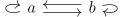
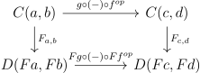
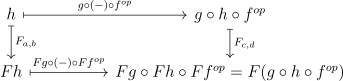
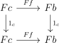
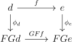

Date: 7/27/2017.
First the definitions:
Definition 1.1. If \(C\) is a category, there is a category called \(C^{op}\) that is the dual category. Its objects are the same as \(C\)’s, and we have \(C(a,b)\) = \(C(b,a), \forall a,b \in C\) (ie the arrows are flipped). If \(f\) is an arrow in \(C\), we call the corresponding arrow in \(C^{op}\) \(f^{op}\). Composition in \(C^{op}\) is defined by \(f^{op}\circ g^{op}=(g\circ f)^{op}\).
Now if \(F: C \to D\) is a functor, then we can define \(F^{op}: C^{op} \to D^{op}\) in the only way that makes sense. In this way, \((-)^{op}\) defines a functor from \(\Cat \) to itself. Note that \((-)^{op}\circ (-)^{op}=(-)^{opop}=1_{\Cat }\), ie the dual of the dual is the original category. Now I can tell you what a contravariant functor really is. If \(F: C \to D\) is a contravariant functor, it is really just a (covariant) functor from \(C^{op}\) to \(D\). Also note that for a group, the dual is the same group with left multiplication switched with right multiplication, and for a poset, the dual is the poset with \(\geq \) switched with \(\leq \).
Recall that we defined two \(\Hom \) functors for a category, \(C(-,a): C^{op} \to \Set \) and \(C(a,-): C \to \Set \)., We can define a more general \(\Hom \) functor \(C(-,-): C^{op}\times C \to \Set \) as follows: on objects, it takes the pair \((a,b)\) to \(C(a,b)\), and on arrows it takes \((f,g): (a,b) \to (c,d)\) to the function \(C(f,g): C(a,b) \to C(c,d)\) that takes \(h \to g\circ h\circ f^{op}\).
Now why do we care about duality? Because many objects, definitions, and theorems that we talk about can be dualized. For example, recall from earlier the definitions of section and retraction. These are dual notions: If \(g\) is a section of \(f\) in \(C\), then \(g^{op}\) is a retract of \(f^{op}\) in \(C^{op}\). What this means is that if a map is a section in a category, it is a retract in the opposite category. Some concepts, such as isomorphism, are self dual. One way to see this uses the idea of diagrams as functors. Consider the category corresponding to the diagram associated with the concept functor. This is isomorphic to its dual (check this), so the notion of isomorphism is self-dual. We can use the word “co” to mean the dual of a concept. For example, codomain is dual to domain, and a coconut is just a nut.
Duality is nice because it allows one to do two things at once: If you prove a theorem about a concept for all categories, you’ve also proved it for the dual concept. Here is an important example.
Definition 1.2. If \(C\) is a category, an initial object \(a\) is an object such that there is exactly one map to every other object. The dual concept is a terminal object.
In this definition, I seem to presume that the notion of an initial object is unique, i.e there can only be 1 at most in any category. Though this is not true, it is true that any two initial objects are isomorphic as follows:
Proposition 1.3. Initial objects are unique up to isomorphism.
Proof. Consider the following diagram, where a and b are initial objects, and use the fact that arrows are unique.

Corollary 1.4. Terminal objects are unique up to isomorphism.
Proof. Terminal is dual to initial, isomorphism is dual to isomorphism. □
Here are some examples of initial/terminal objects. In \(\Set \), the initial object is the empty set, and the terminal object is the set with one element. In \(\Grp \) and \(\Ab \), the terminal and initial object are both the trivial group. In this case, it is called a null or zero object. In the category of rings (\(\CRing \) or \(\Ring \)), the terminal object is the trivial ring, and the initial object is \(\ZZ \). In fact, if we consider for each ring, the kernel of this unique map from \(\ZZ \), we get the characteristic of that ring. This is a functor to the category of rings that are quotients of \(\ZZ \) (or to the poset of natural numbers (and 0) by division).
It turns out Proposition 1.3 and its dual are very important: many uniqueness statements involve viewing the object you are studying in the right category, and then realizing it is initial or terminal.
Here is another example of duality: it turns out surjections and injections in Set are dual. For this we will need the definition:
Definition 1.5. An arrow \(f\) is mono if \(f \circ g = f \circ h \implies g = h\). The dual notion is epi.
In \(\Set \), monos are injections, and epis are surjections (exercise). In the category of groups we have the same, but this is not true in general. For algebraic categories (like \(\Grp \), \(\Ab \), \(\Ring \), \(\CRing \), \(\Vect _K\)) monos are always injections, but epis are not necessarily surjections. For example, a localization in \(\CRing \) may be not surjective (for example the map \(\ZZ \to \QQ \)) but is epi.
We want to say when two categories can be considered “the same”. A naive way to do this is to say that \(C\) and \(D\) should be considered the same if they are isomorphic in \(\Cat \). However, this is too restrictive a definition: we often have categories that behave the same, but are not isomorphic. For example, consider the category \(\Matr _F\) with objects the natural numbers (I include \(0 \in \NN \)) and arrows \(m \to n\) the \(m \times n\) matrices with \(F\) coefficients). This category is very similar to the category \(\FinVect _F\) of finite dimensional \(F\)-vector spaces. In situations like these, we should have a notion of equivalent categories that generalizes isomorphic. Hence the following definition:
Definition 2.1. A functor \(F: C \to D\) is an equivalence if there is a \(G:D \to C\) such that \(G \cdot F \cong 1_C\) and \(F \cdot G \cong 1_D\).
In other words, \(C\) and \(D\) are equivalent if they are isomorphic up to isomorphism. If you have seen a homotopy equivalence in topology, this is the analogous definition with homotopy replaced by natural isomorphism.
Here are some examples of categories that are equivalent:
We can consider the category of transitive \(G\)-sets (\(G\) is a group): the objects are sets with a transitive \(G\)-action, and the maps are functions compatible with the \(G\)-action. Similarly we can consider the category of subgroups of \(G\). The Orbit Stabilizer theorem says that these two categories are equivalent (the equivalence is given by taking the stabilizer of a point).
Another example is from classical algebraic geometry. One main idea in algebraic geometry is that one can translate between algebraic and geometric problems. If \(\AA ^n\) is affine n-space over an algebraically closed field \(K\), then an algebraic set is a subset of \(\AA ^n\) that is the common zeroes of an ideal \(I \subset K[x_1,...,x_n]\) for some n. A morphism between two algebraic sets is a map from one algebraic set to another that is given by a polynomial. The main theorem about these algebraic sets is that the category of algebraic sets is (contravariantly) equivalent to the category of reduced finitely generated K-algebras (ie rings that are quotients of polynomial rings over K in finitely many variables and have no nilpotent elements). To get the equivalence, on takes an algebraic set \(A \in \AA ^n\) to \(K[x_1,...,x_n]/I(A)\) where \(I(A)\) is the ideal of polynomials that vanish on \(A\).
This idea of taking a category of spaces and associating a category of rings that is equivalent is quite a common idea.
For example, there is a famous theorem known as Stone’s Representation Theorem, which says that the category of Stone spaces (totally disconnected compact Hausdorff spaces) is equivalent to the category of Boolean algebras (complemented distributive lattices). One constructs the Stone space \(S(A)\) from the Boolean algebra \(A\) by looking at the set of homomorphisms from \(A\) to \(2\), the initial Boolean algebra. Another example from functional analysis is that the category of compact Hausdorff spaces is equivalent to the category of commutative \(C^*\)-algebras with identity. one constructs the \(C^*\)-algebra from the compact Hausdorff space by looking at the set of continuous functions from the space to \(\CC \), and naturally giving it a \(C^*\)-algebra structure.
How can we tell if a functor is an equivalence? The following three definitions and propositions will help us:
Definition 2.2. A functor \(F: C \to D\) is full if for each \(a,b \in C\), we have the map from \(C(a,b) \to D(Fa,Fb)\) surjective. Similarly it is faithful if it is injective. It is fully faithful if it is a bijection.
Note that a functor \(F:C \to D\) can be defined as a function from the objects to objects and arrows to arrows, giving a functor \(D(F-,F-)\) and a natural transformation between \(C(-,-)\) and \(D(F-,F-)\)
Definition 2.3. A functor \(F: C \to D\) is essentially surjective or dense if for every object of \(D\), there is an isomorphic object in the image.
Proposition 2.4. Equivalence is an equivalence relation.
Proof. It is clearly reflexive and symmetric. For transitivity, if \(F: C \to D, F': D \to C, G: D \to E, G': E \to D\) are functors and \(\eta : F'F \to 1_C, \ee : FF' \to 1_D, \eta ': G'G \to 1_D, \ee ': GG' \to 1_E\) are natural isomorphisms, then \(F'G'GF\) is naturally isomorphic to \(1_C\) via \(F'\eta 'F \cdot \eta \), and \(GFF'G'\) is naturally isomorphic to \(1_E\) via \(G\ee G'\cdot \ee '\) □
We will need a fact about functors.
Proposition 2.5. If \(F:C \to D\) is a functor, then so is \(D(F-,F-): C^{op} \times C \to \Set \) and \(F_{a,b}\), or “applying \(F\)” is a natural transformation from \(C(-,-) \to D(F-,F-)\). \(\eta _F\) is a natural isomorphism iff \(F\) is fully faithful.
Proof. Consider the diagram:

We can chase around an arrow h:

It is obvious that this is a natural isomorphism iff \(F\) is fully faithful. □
Proposition 2.6. A functor \(F: C \to D\) is an equivalence iff it is fully faithful and essentially surjective.
Proof. Suppose \(F\) is an equivalence, and let \(G\) be as in Definition 2.2. Then let \(d \in D\). As there is an isomorphism between \(FGd\) and \(d\), \(F\) is essentially surjective. Now note that being full and faithful is preserved by natural isomorphism (this becomes very obvious if you use the categorified homotopy version of a natural transformation). Then since identity functors are fully faithful, \(F\cdot G\) and \(G \cdot F\) are fully faithful. \(F\) then must be faithful as \(G \cdot F\) is. Given an arrow \(f: Fa \to Fb\), let \(h = \ee _b \circ Gf \circ \ee _a^{-1}\), where \(\ee \) is the natural transformation from \(GF to 1_C\). Then \(GFh = Gf\) by naturality of \(\ee \) and as \(G\) is faithful \(Fh = f\), so \(F\) is full.
Conversely, suppose \(F\) is fully faithful, and essentially surjective. Then for each \(d \in D\), we can choose an isomorphism \(\phi _d\) from an \(d_F\) in image of \(F\) (If \(d\) is in the image, choose \(d_F=d\)) . We can define \(G: D \to C\) on objects to be just an element of the preimage of \(d_f\). On arrows, as \(F\) is fully faithful, we can send an arrow \(f\) from \(d \to d'\) to the unique arrow that \(\phi _{d'} \circ f \circ \phi _d^{-1}\) corresponds to. Then we can make a natural isomorphism \(\ee \) from \(G \circ F\) to \(1_C\) as follows. If \(c \in C\), then \(GFc\) are sent to the same thing by \(F\) so we can choose the isomorphism that is the preimage of \(1_{Fc}\) in the natural isomorphism from \(C(c,GFc)\) to \(D(Fc,Fc)\) given by applying \(F\) (check this is an isomorphism by doing the same with \(C(GFc,c)\)). To see this is natural, we have:
which commutes as we can apply F to everything to get

but \(F\) is faithful so the original diagram commutes. In particular, G,F is also fully faithful and essentially surjective.
I claim \(\phi \) which at \(d\) is \(\phi _d\) is a natural isomorphism from \(1_D\) to \(F \circ G\). To see this we have the diagram:

which commutes as \(GFf \circ \phi _d = \phi _d \circ f \circ \phi _d^{-1} \circ \phi _d = \phi _d \circ f = \phi _d \circ f\). □
A subcategory of a category \(D\) is a category \(I\) with an inclusion map \(i:I \to D\) that is a faithful functor. If this inclusion is also full, \(I\) is a full subcategory. A skeleton of a category is a fully faithful subcategory with one object for every isomorphism class of the category. For example, \(\Matr _F\) is a skeleton of \(\FinVect _F\) if we choose isomorphisms to a particular finite dimensional vector space. Proposition 2.6 implies this is an equivalence. One might be tempted to replace all categories with skeleta, but this is generally not a good thing to do unless one wants to deal with set-theoretic issues. Looking at categories up to equivalence is not a bug, but a feature of category theory.